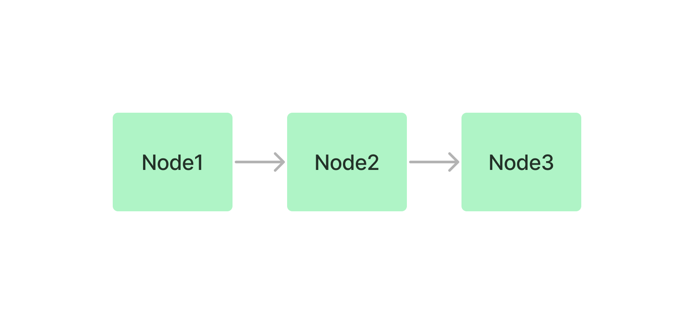
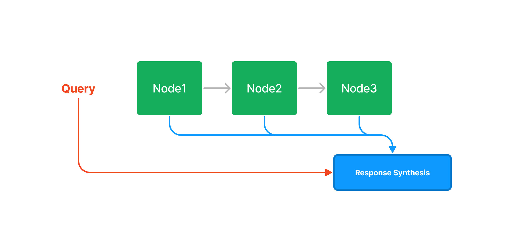
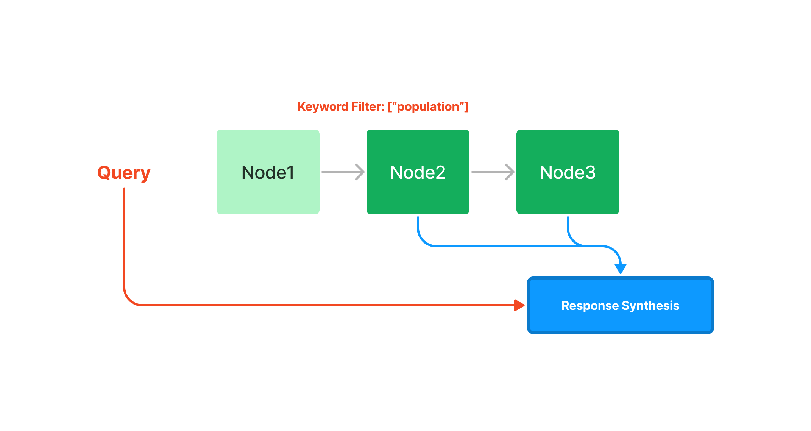
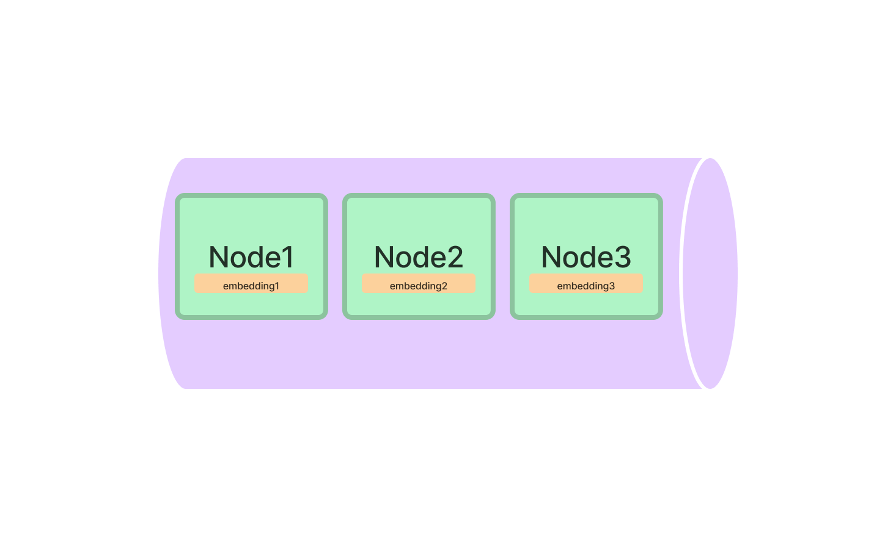
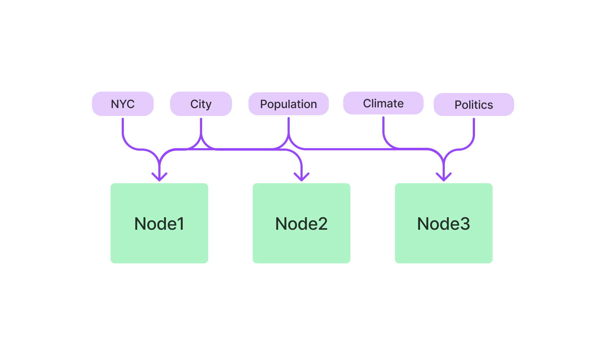

How Each Index Works#
This guide describes how each index works with diagrams.
Some terminology:
- Node: Corresponds to a chunk of text from a Document. LlamaIndex takes in Document objects and internally parses/chunks them into Node objects.
- Response Synthesis: Our module which synthesizes a response given the retrieved Node. You can see how to specify different response modes.
Summary Index (formerly List Index)#
The summary index simply stores Nodes as a sequential chain.

Querying#
During query time, if no other query parameters are specified, LlamaIndex simply loads all Nodes in the list into our Response Synthesis module.

The summary index does offer numerous ways of querying a summary index, from an embedding-based query which will fetch the top-k neighbors, or with the addition of a keyword filter, as seen below:

Vector Store Index#
The vector store index stores each Node and a corresponding embedding in a Vector Store.

Querying#
Querying a vector store index involves fetching the top-k most similar Nodes, and passing those into our Response Synthesis module.

Tree Index#
The tree index builds a hierarchical tree from a set of Nodes (which become leaf nodes in this tree).

Querying#
Querying a tree index involves traversing from root nodes down
to leaf nodes. By default, (child_branch_factor=1), a query
chooses one child node given a parent node. If child_branch_factor=2, a query
chooses two child nodes per level.

Keyword Table Index#
The keyword table index extracts keywords from each Node and builds a mapping from each keyword to the corresponding Nodes of that keyword.

Querying#
During query time, we extract relevant keywords from the query, and match those with pre-extracted Node keywords to fetch the corresponding Nodes. The extracted Nodes are passed to our Response Synthesis module.

Property Graph Index#
The Property Graph Index works by first building a knowledge graph containing labelled nodes and relations. The construction of this graph is extremely customizable, ranging from letting the LLM extract whatever it wants, to extracting using a strict schema, to even implementing your own extraction modules.
Optionally, nodes can also be embedded for retrieval later.
You can also skip creation, and connect to an existing knowledge graph using an integration like Neo4j.
Querying#
Querying a Property Graph Index is also highly flexible. Retrieval works by using several sub-retrievers and combining results. By default, keyword + synoymn expanasion is used, as well as vector retrieval (if your graph was embedded), to retrieve relevant triples.
You can also chose to include the source text in addition to the retrieved triples (unavailble for graphs created outside of LlamaIndex).
See more in the full guide for Property Graphs.